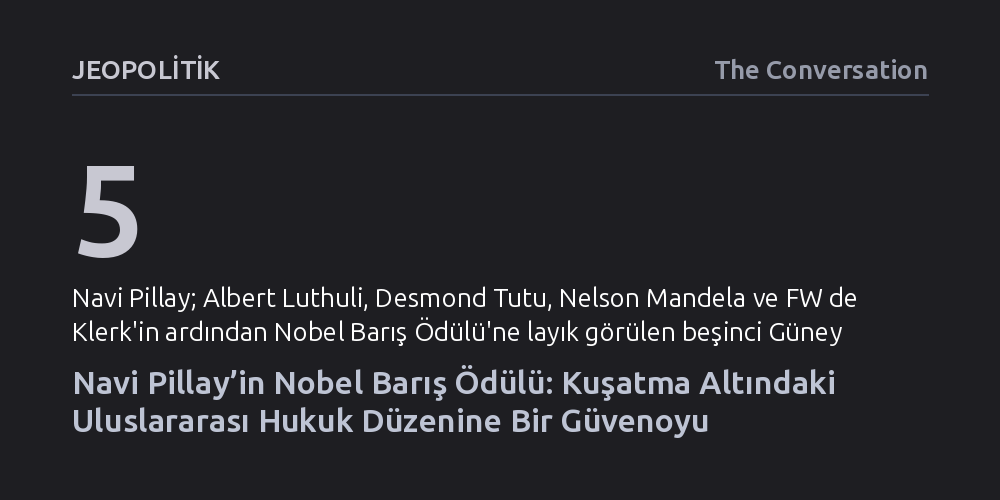

JEOPOLITIK · The Conversation · 2026-10-11
2026 Nobel Barış Ödülü'nün Güney Afrikalı kıdemli yargıç Navi Pillay'e verilmesi, ABD yaptırımları ve siyasi baskılarla yıpratılan uluslararası hukuk kurumlarına yönelik stratejik bir güvenoyu niteliği taşıyor. Ödül; Ruanda'dan Gazze'ye uzanan soruşturmaların mimarı Pillay üzerinden, güç sahiplerinin yargılanabilirliğini ve uluslararası hukukun meşruiyetini teyit ediyor.
Uluslararası ceza mahkemelerinin ve insan hakları hukukunun büyük güçlerce etkisizleştirilmeye çalışıldığı bir dönemde, bu kurumların küresel barış ve hesap verebilirlik için neden hala vazgeçilmez bir sığınak olduğunu ortaya koyar.

2026 Nobel Barış Ödülü'nün Güney Afrikalı uluslararası hukukçu ve yargıç Navanethem "Navi" Pillay’e verilmesi, yalnızca adalet mücadelesine adanmış istisnai bir ömrün onurlandırılması anlamına gelmiyor. Bu karar, İkinci Dünya Savaşı sonrasında inşa edilen küresel hukuk düzeninin en ağır varoluşsal krizini yaşadığı, meşruiyetinin ve yaptırım gücünün en sert biçimde sorgulandığı kritik bir tarihsel dönemece denk düşüyor. Nobel Komitesi, Pillay şahsında, tüm aksaklıklarına ve eksikliklerine rağmen uluslararası hukukun barışçıl bir dünya için vazgeçilmez bir zemin olduğu inancını güçlü bir şekilde teyit ediyor.
Ödülün zamanlaması son derece çarpıcı bir jeopolitik gerilimin tam merkezinde yer alıyor. Açıklamadan yalnızca birkaç gün önce ABD Başkanı Donald Trump’ın Uluslararası Ceza Mahkemesi’ni (UCM) açıkça hedef alıp tüm üyelerine istifa çağrısı yapması ve ödülün ilanının hemen ardından Washington’ın mahkemeye resmi yaptırımlar getirmesi tablonun vahametini gösteriyor. Nobel Komitesi, tam da yargıçlarının yaptırımlarla tehdit edildiği bir anda eski bir UCM yargıcını ödüllendirerek, siyasi güç sahiplerinin baskılarına karşı uluslararası hesap verebilirlik kurumlarına açık bir kalkan oluşturduğunu ilan etmiştir.
Güney Afrika açısından bu ödül, Albert Luthuli, Desmond Tutu, Nelson Mandela ve FW de Klerk'in ardından ülkeye giden beşinci Nobel Barış Ödülü olma özelliğini taşıyor. Ancak Pillay, bu payeyi kazanan ilk Güney Afrikalı kadın ve renkli hukukçu olarak tarihi bir eşiği aşıyor. Nobel Barış Ödülü’nün geçmişten gelen "Avrupa ve ABD'den iyi eğitimli beyaz erkekleri ödüllendirme" alışkanlığını kıran bu adım, küresel güneyin adalet arayışını merkeze yerleştiriyor.
Pillay’in hikâyesini öncüllerinden ayıran çok belirleyici bir fark var: Nelson Mandela ırk ayrımcılığı rejiminin ardından küresel bir toplumsal uzlaşının simgesi haline gelirken, Pillay Güney Afrika’daki apartheid direnişinin ilkelerini doğrudan küresel kurumsal mimariye taşıdı. 1941’de Durban’da Tamil kökenli yoksul bir ailede doğup ırk ve cinsiyet ayrımcılığını bizzat yaşayan Pillay, 1967’de kendi eyaletinde hukuk bürosu açan ilk renkli kadın oldu. Apartheid rejiminin mahkemelerinde siyasi aktivistleri savundu, işkenceleri teşhir etti ve Nelson Mandela tarafından 1995’te yeni demokratik dönemin ilk Yüksek Mahkeme yargıçlarından biri olarak atandı. Ancak onun asıl mirası, ulusal zaferle yetinmeyip insanlığı sarsan en ağır suçların yargılanacağı uluslararası kurumların bizzat kurucusu ve ilk yargıcı haline gelmesi oldu.
Pillay’in uluslararası hukuk içtihadına bıraktığı en sarsıcı miras, 1994 Ruanda soykırımının ardından kurulan Birleşmiş Milletler Ruanda Uluslararası Ceza Mahkemesi’ndeki (ICTR) başkanlığı sırasında şekillendi. Mahkemenin ilk yargıç heyetinde yer alan Pillay, binlerce insanın katledilmesinden sorumlu Jean-Paul Akayesu’nun 1998 yılındaki tarihi davasında tanıkları bizzat sorgulayarak yaşanan sistematik cinsel şiddeti gün yüzüne çıkardı.
Bu kararlı duruş sayesinde iddianame genişletildi ve dünya hukuk tarihinde çığır açan bir hüküm kuruldu: Tecavüz ve cinsel şiddet, ilk kez bir uluslararası ceza mahkemesi tarafından insanlığa karşı suç ve soykırım eylemi olarak resmen tanındı. Bu karar, yüzlerce yıl boyunca savaşların kaçınılmaz bir yan etkisi ve "ganimeti" olarak görülen tecavüzün, kadınları ve kız çocuklarını hedef alan sistematik bir suç ve soykırım vasıtası olduğunu tescilleyerek uluslararası ceza hukukunun yönünü kalıcı biçimde değiştirdi.
Daha sonra 2008-2014 yılları arasında BM İnsan Hakları Yüksek Komiserliği görevini üstlenen Pillay, bu makama gelen küresel güneyden ilk kadın oldu. Küresel finans krizinin yarattığı çalkantılar, Arap Baharı ve Suriye iç savaşı gibi fırtınalı süreçlerde görev yaparken; insan haklarının ekonomik çıkarlara, ulusal egemenlik bahanelerine veya siyasi konjonktüre kurban edilemeyeceğini kararlılıkla savundu. LGBTİ+ bireylerin eşitliği, nefret suçlarının belgelenmesi ve önlenebilir anne ölümlerinin salt bir sağlık sorunu değil temel bir insan hakkı ihlali sayılması gibi konularda BM sisteminde devrim niteliğinde adımlara öncülük etti.
Pillay’in kariyerini özetleyen temel prensip son derece nettir: Hukuk ilkelerinin uygulanması en çok, siyasi açıdan muktedir aktörlerin yargı denetimini reddettiği anlarda zorlaşır ve tam da bu anlarda hayati hale gelir. Pillay, BM'nin İşgal Altındaki Filistin Toprakları ve İsrail Bağımsız Uluslararası Soruşturma Komisyonu başkanlığı görevinde, İsrail ve ABD'den gelen olağanüstü siyasi baskılara rağmen Gazze’deki savaş suçlarını belgelemekten geri adım atmadı. Komisyonun 2025 yılında İsrail’in Gazze’de soykırım suçu işlediği sonucuna varan raporu, bağlayıcı bir mahkeme hükmü olmasa da küresel ceza soruşturmalarının zeminini oluşturan en kapsamlı hukuki belgelerden biri oldu.
Kısa süre önce 85 yaşına basan kıdemli yargıcın adalet mücadelesi bununla da sınırlı değil. Pillay, 2019 yılından bu yana Uluslararası Adalet Divanı’nda Gambiya’nın Myanmar’a karşı açtığı Rohingya soykırımı davasında ad hoc yargıç olarak görev yapmaya devam ediyor. Duruşmaları 2026 başında tamamlanan bu tarihi davanın nihai kararının yıl sonuna kadar açıklanması bekleniyor.
Navi Pillay’e verilen Nobel Barış Ödülü, uluslararası adaletin dünyadaki güç mücadelelerine karşı mutlak bir zafer kazandığını iddia etmiyor. Fakat küresel zorbalığa ve cezasızlık kültürüne karşı dişle tırnakla kurulan uluslararası denetim mekanizmalarının neden teslim edilmemesi gerektiğini tüm dünyaya çok güçlü bir dille hatırlatıyor.